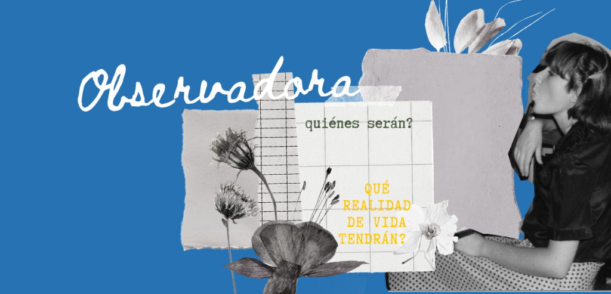

All’età di tredici anni María Inés - sorella maggiore di Cecilia – ha conosciuto il Movimento dei Focolari, fondato da Chiara Lubich nel 1943, a cui più tardi ha aderito tutta la sua famiglia.
“... siccome è stata una delle prime famiglie ad aderire a questo Movimento a Punta Alta, sono diventati “seminatori” di questo seme in tante persone e la loro casa si trasformò, in modo naturale, in centro di riunioni spontanee: sia per quanti volevano far parte del Movimento, per coloro che volevano sapere di cosa si trattassi, come pure per quelli che arrivavano dalla Capitale Federale per portare le ultime notizie della vita del movimento in diverse parti del mondo, i messaggi di Chiara Lubich, oppure per organizzare incontri in cui approfondire lo spirito dei focolari” (frammento del libro “Tus caminos son una locura” di Licy Miranda, Editrice Ciudad Nueva)
Cecilia aveva a cuore gli altri, aveva quest’inquietudine. Perciò al momento del pisolino frequentemente guardava fuori dalla finestra per veder passare le persone, le osservaba e si chiedeva chi sarebbero state, quale realtà di vita ci fosse dietro ognuna di loro.
Ai suoi diciasette anni si è ammalata la mamma, restando a letto per lunghi periodi. I due fratelli maggiori erano a studiare fuori dalla città ed i fratelli minori erano piccoli, è stato così che Cecilia è diventata il pilasttro per sostenere la realtà familiare assieme a suo padre. Inoltre, facendo un grande sforzo è riuscita a studiare e fare gli esami per finire le superiori.
“Una delle sue zie (...) racconta: una volta quando (come siamo soliti a fare a volte gli anziani) mi lamentavo, mi disse: ‘come puoi dire così? non vedi le tue gioie?’ E con le sue parole mi ha spiegato, che è possibile imparare a guardare diversamente la vita, uscendo da se stessi e vivendo la relatà nella sua totalità. Allora ci si accorge che i dolori e le gioie hanno la stessa intensità. Ciò che succede è che non si da tanta importanza alla gioia quanto al dolore.” (frammento del libro “Tus caminos son una locura” di Licy Miranda, Editrice Ciudad Nueva)
In realtà Ceci per noi era un sole. Con lei tutto era bello. Avevamo sei anni di differenza e nel trascorso della vita condivisa, nelle diverse tappe, c’era un fattore comune: lei era incondizionale.
Prima ancora di chiederle sapevi che ci contavi, o che ti avrebbe dato, o che ti avrebbe ascoltata o accompagnata, o ti prestava quella cosa, particolarmente a me i suoi vestiti” (Testimonianza di Teresa, la sorella più piccola)